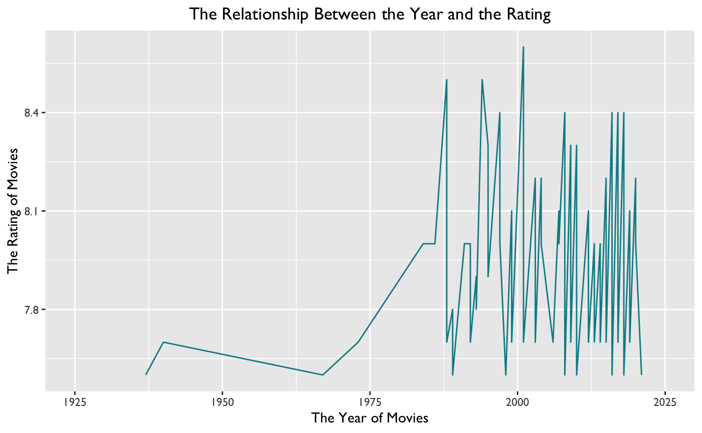
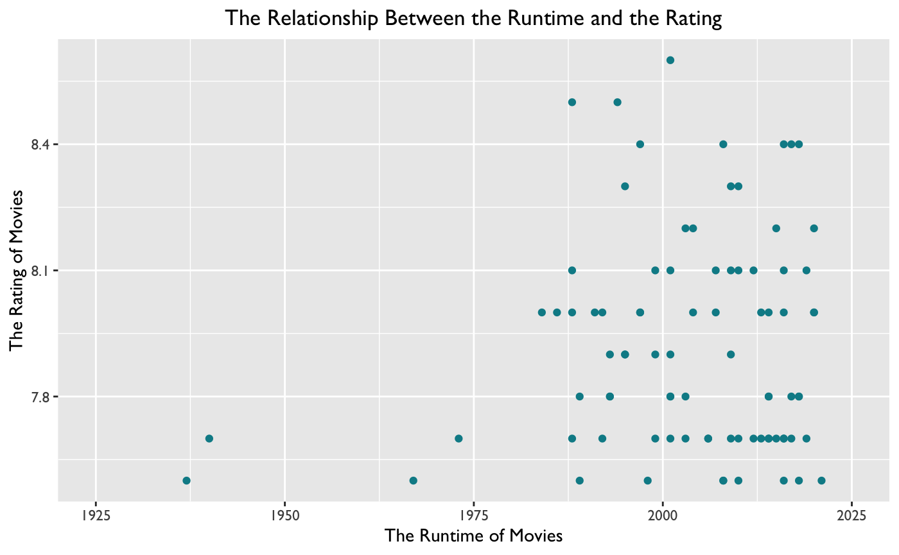
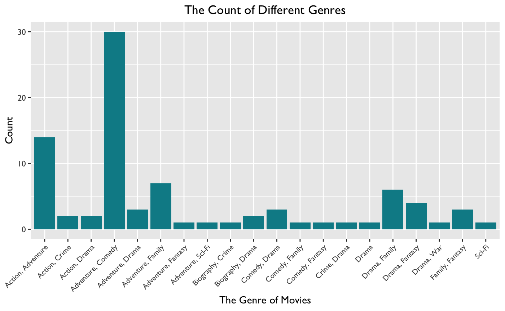
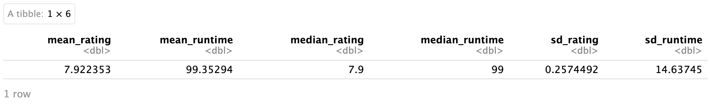
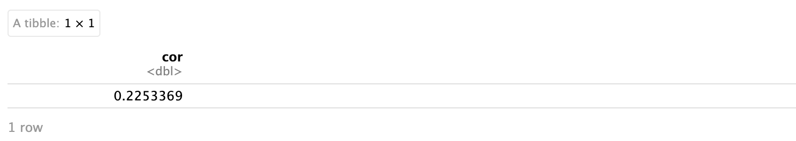
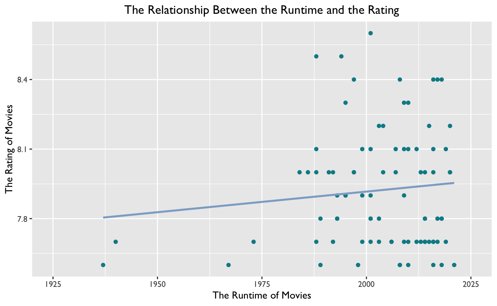
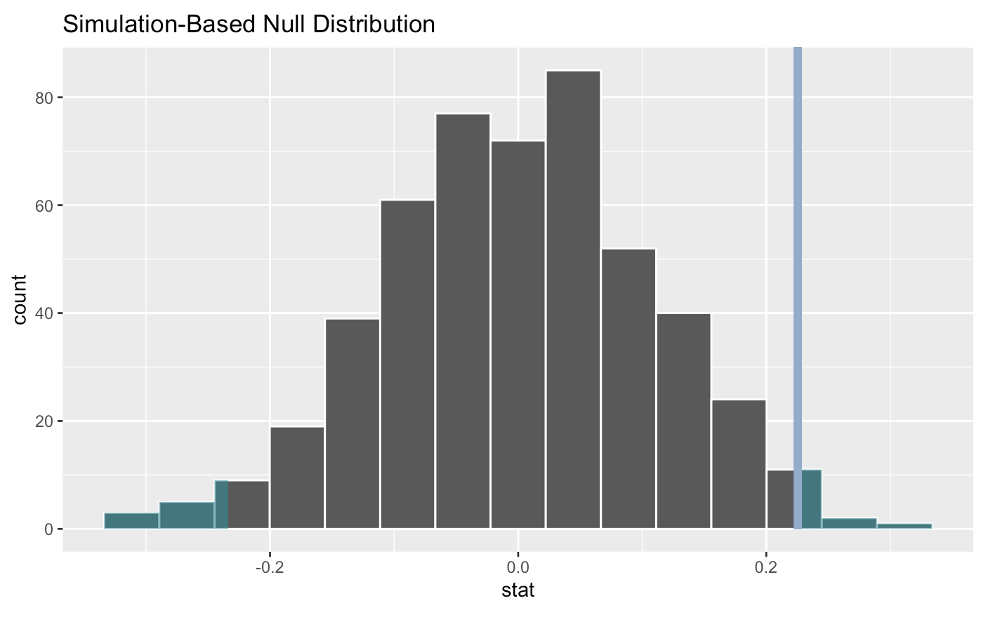
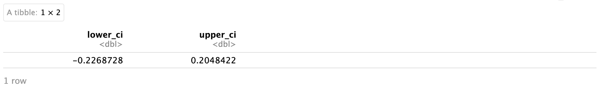
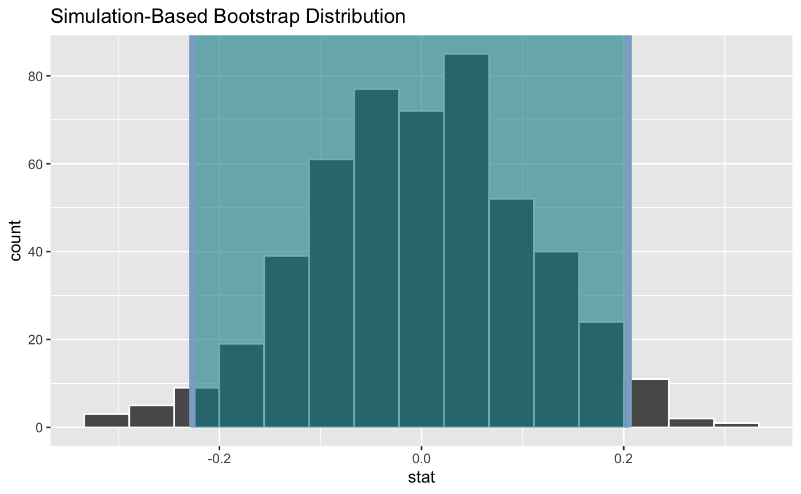

Overview: For this project, I downloaded a dataset about animated movies from Kaggle and then used R to analyze it. This data contained various information, such as rating, genre, year, and runtime, of 85 movies. I chose this dataset because there are many movies that I have watched and really liked. Therefore, I would like to find the relationship between some of the information (variables) provided.
Project Type: Individual Project
Duration: 12/2023
Skills: Statistical Inference, Data visualization, R (Programming Language), Web Development
Below were the packages I used in this project.
library(readr)
library(moderndive)
library(ggplot2)
library(dplyr)
library(stringr)
library(infer)
I would like to visualize some data first, so I could have a general understanding of some specific variables that I was interested in.
I was interested in whether there was a relationship between the year and the rating. These two variables were both numerical, and there was an inherent ordering to the variable, year. Therefore, I used the linegraph to visualize the dataset.
a. Below was the codes.
ggplot(TopAnimatedImDb, aes(x = Year, y = Rating)) +
geom_line(color = "#018B96") +
scale_x_continuous(limits = c(1925, 2025)) +
theme(text = element_text(family = "Gill Sans"),
plot.title = element_text(hjust = 0.5))+
labs(x = "The Year of Movies", y = "The Rating of Movies",
title = "The Relationship Between the Year and the Rating")
b. Below was the graph.
Then, I wanted to know the relationship between the runtime and the rating. These two variables were both numerical, but they did not have an inherent ordering. Therefore, I used the scatterplot to visualize the dataset.
a. Below was the codes.
ggplot(TopAnimatedImDb, aes(x = Year, y = Rating)) +
geom_point(color = "#018B96") +
scale_x_continuous(limits = c(1925, 2025)) +
theme(text = element_text(family = "Gill Sans"),
plot.title = element_text(hjust = 0.5)) +
labs(x = "The Runtime of Movies", y = "The Rating of Movies",
title = "The Relationship Between the Runtime and the Rating")
b. Below was the graph.
Finally, I also would like to know the count of different genres of these movies. Because it was a categorical variable, I used the barplot to visualize it. Below was the codes.
a. Below was the codes.
ggplot(TopAnimatedImDb, aes(x = Genre)) +
geom_bar(fill = "#018B96") +
theme(text = element_text(family = "Gill Sans"),
plot.title = element_text(hjust = 0.5),
axis.text.x = element_text(angle = 45, hjust = 1, size = 8)) +
labs(x = "The Genre of Movies", y = "Count",
title = "The Count of different genres")
b. Below was the graph.
For this part, I calculated the mean, median, and standard deviation of the variable, Runtime, and the variable, Rating.
a. Below was the codes
summary_rating <- TopAnimatedImDb %>%
mutate(Runtime_clean = as.numeric(str_remove(Runtime, " min"))) %>%
summarize(mean_rating = mean(Rating, na.rm = TRUE),
mean_runtime = mean(Runtime_clean, na.rm = TRUE),
median_rating = median(Rating, na.rm = TRUE),
median_runtime = median(Runtime_clean, na.rm = TRUE),
sd_rating = sd(Rating, na.rm = TRUE),
sd_runtime = sd(Runtime_clean, na.rm = TRUE))
summary_rating
b. Below was the result.
Conclusion: Now you can see values of mean, median, and standard deviation of the runtime and ratiing.
Because I wanted to know if there was a relationship between the runtime and rating, I calculated the regression of these two variables.
a. Below was the codes
TopAnimatedImDb %>%
mutate(Runtime_clean = as.numeric(str_remove(Runtime, " min"))) %>%
get_correlation(Rating ~ Runtime_clean)
b. Below was the result.
Conclusion: The correlation was about 0.23, which meant that there was a weak positive relationship between these two variables. In other words, movies with a longer runtime were more likely to have a higehr scores.
a. Below was the codes.
ggplot(TopAnimatedImDb, aes(x = Year, y = Rating)) +
geom_point(color = "#018B96") +
scale_x_continuous(limits = c(1925, 2025)) +
theme(text = element_text(family = "Gill Sans"),
plot.title = element_text(hjust = 0.5)) +
labs(x = "The Runtime of Movies", y = "The Rating of Movies",
title = "The Relationship Between the Runtime and the Rating") +
geom_smooth(method = "lm", color = "#8EACCD", se = FALSE)
b. Below was the chart.
Conclusion: There is a line that goes up from from the lower left to the upper right.
As I mentioned above, I would like to study the relationship between the variable, Runtime, and the variable, Rating. Therefore, I made two hypotheses:
H0: There is no relationship between the runtime and the rating.
H1: There is a relationship between the runtime and the rating.
a. Below was the codes.
movies_distribution <- TopAnimatedImDb %>%
mutate(Runtime_clean = as.numeric(str_remove(Runtime, " min"))) %>%
specify(formula = Rating ~ Runtime_clean) %>%
hypothesize(null = "independence") %>%
generate(reps = 500, type = "permute") %>%
calculate(stat = "correlation")
movies_distribution
a. Below was the codes:
movies_obs_stat <- TopAnimatedImDb %>%
mutate(Runtime_clean = as.numeric(str_remove(Runtime, " min")))%>%
specify(formula = Rating ~ Runtime_clean) %>%
calculate(stat = "correlation")
movies_obs_stat
movies_distribution %>%
get_p_value(obs_stat = movies_obs_stat, direction = "both")
visualize(movies_distribution) +
shade_p_value(obs_stat = movies_obs_stat, color = "#8EACCD", fill = "#018B96", direction = "both")
b. Below was the chart:
a. Below was the codes:
percentile_ci <- movies_distribution %>%
get_confidence_interval(level = 0.95, type = "percentile")
percentile_ci
visualize(movies_distribution) +
shade_confidence_interval(endpoints = percentile_ci, color = "#8EACCD", fill = "#018B96")
labs(title = "Simulation-Based Bootstrap Distribution")
b. Below was the chart:
Becasue the p-value was 0.036, which was greater than the α (0.05 in this case). Therefore, I successfully rejected the null hypothesis and accepted the alternative hypothesis. In other words, there was a weak positive relationship between the runtime and the rating.